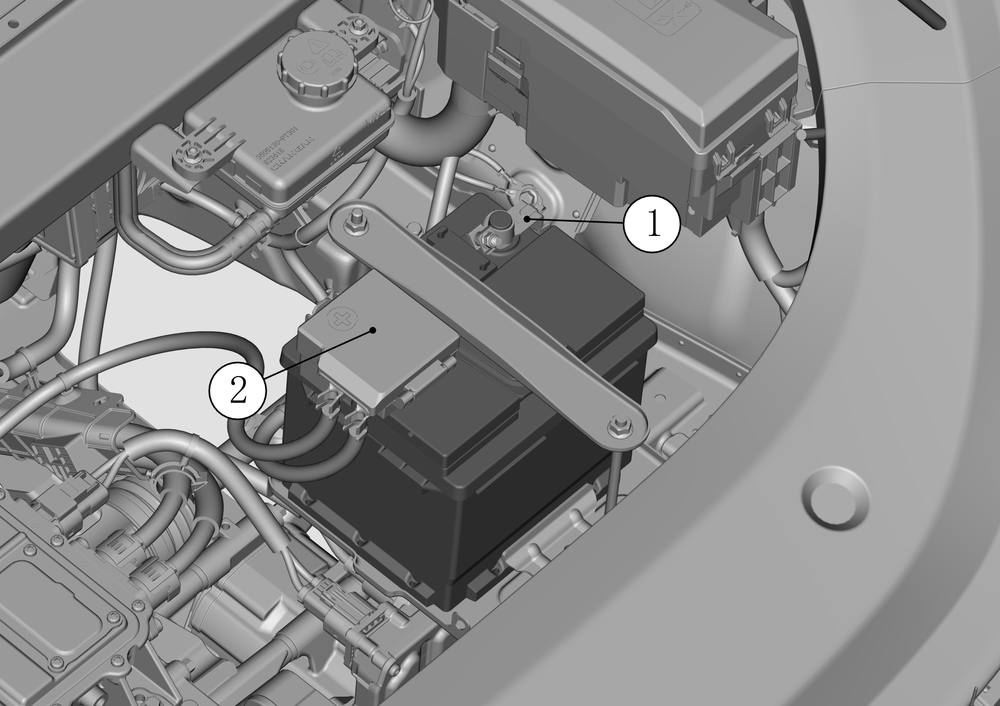
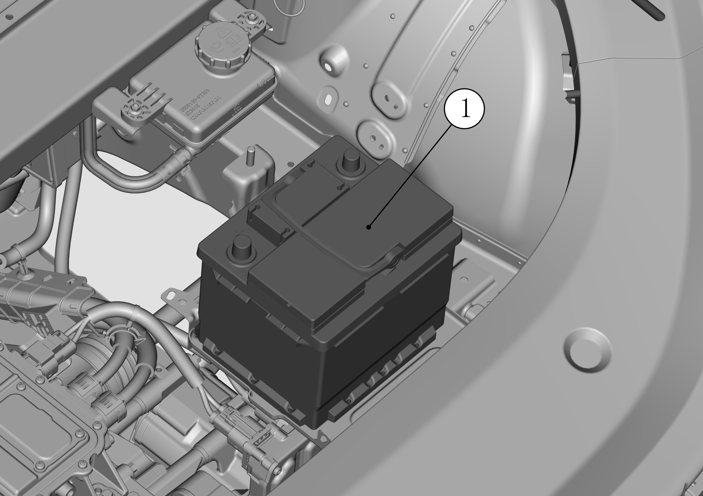

Аккумуляторная батарея в сборе
Снятие
-
Используя торцевую головку на 8 mm, сначала открутить гайку хомута отрицательной клеммы Аккумуляторная батарея, затем открыть крышку блока предохранителей положительной клеммы Аккумуляторная батарея и открутить гайку положительной клеммы;

Примечание: ①: гайка хомута отрицательной клеммы; ②: крышка блока предохранителей положительной клеммы Аккумуляторная батарея (гайка положительной клеммы находится внутри блока предохранителей).
-
Используя торцевую головку на 8 mm, ослабить гайки крепления верхней прижимной планки и нижнего крепежного элемента Аккумуляторная батарея, последовательно снять верхнюю прижимную планку и крепежный элемент Аккумуляторная батарея;

Примечание: ①: верхняя прижимная планка и болт Аккумуляторная батарея; ②: крепежный элемент и болт Аккумуляторная батарея.
-
Взявшись за ручку, извлечь Аккумуляторная батарея в сборе.

Примечание: ①: Аккумуляторная батарея в сборе.
Установка
Внимание
-
Установить Аккумуляторная батарея в сборе устойчиво на поддон Аккумуляторная батарея;

Примечание: ①: Аккумуляторная батарея в сборе.
-
Установите на место крепежный элемент и верхнюю прижимную планку Аккумуляторная батарея, затянуть болты с помощью торцевой головки;

Примечание: ①: верхняя прижимная планка Аккумуляторная батарея; ②: крепежный элемент Аккумуляторная батарея.
-
Сначала установить крепежную гайку положительной клеммы и крышку блока предохранителей положительной клеммы, затем подключить силовой провод отрицательной клеммы; моменты Установка составляют 6 N.m.

Примечание: ①: силовой провод отрицательной клеммы Аккумуляторная батарея; ②: крышка блока предохранителей положительной клеммы Аккумуляторная батарея (гайка положительной клеммы находится внутри блока предохранителей).